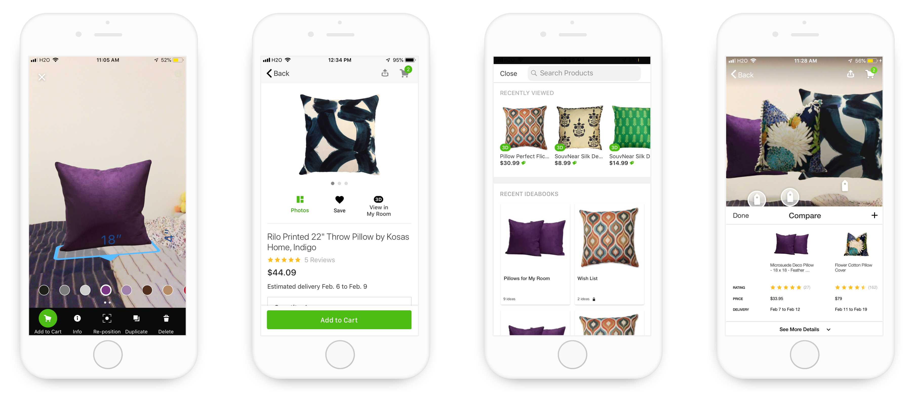
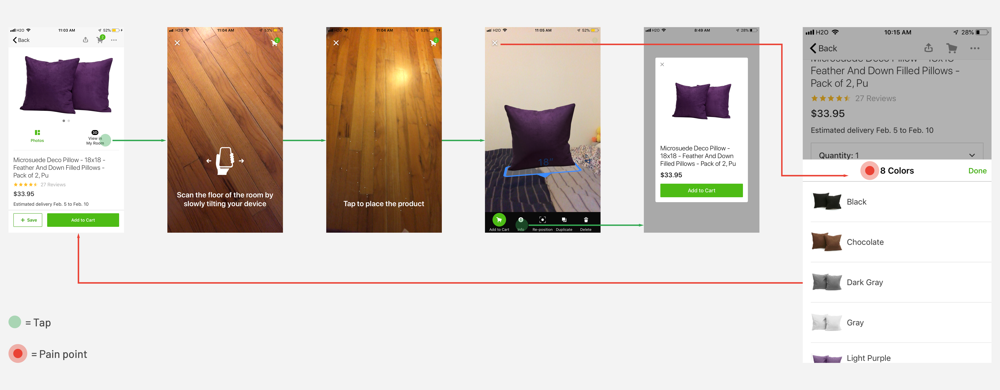
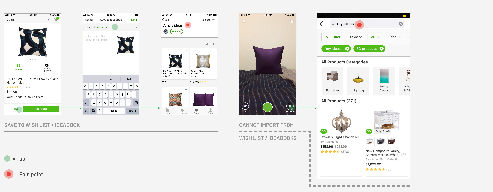
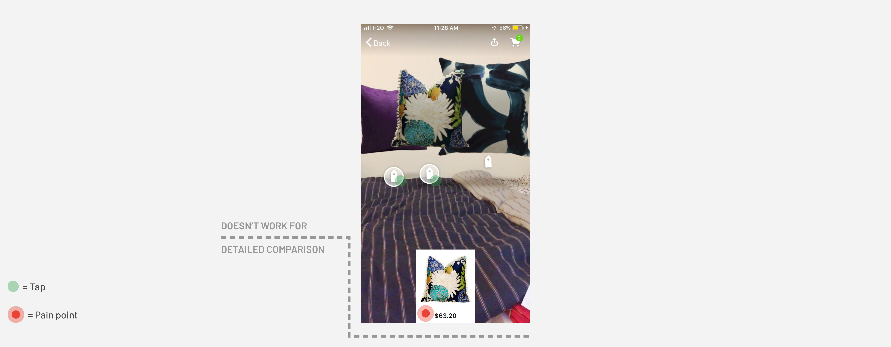
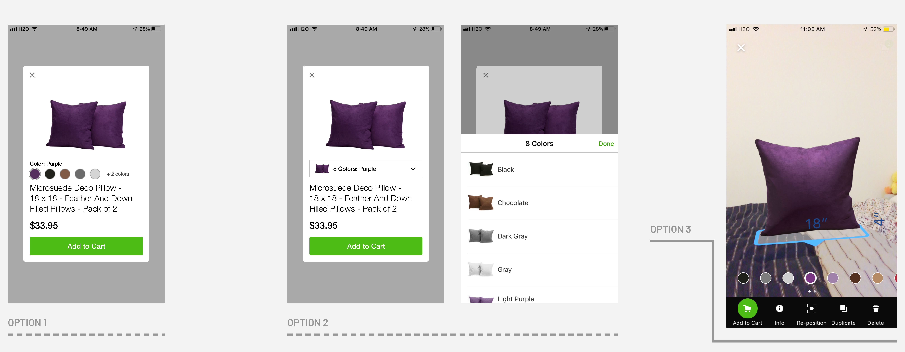
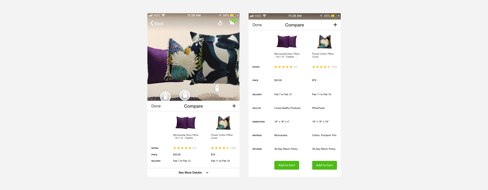

Houzz Redesign
Improve 3D Preview Experience
Type
- Individual Work
- Interaction Design
Duration
- 3 days
My Role
- Interaction Designer
- UX Researcher
What I Did
- Needs Assessment
- Interaction Design
Design Challenge
Redesign a feature of a Kleiner Perkins company’s product
As part of the application for the Kleiner Perkins Design Fellow, I was challenged to redesign a feature of a Kleiner Perkins company's product.
Growing up on a small island, Taiwan, I’ve never had my own room before I came to the States to pursue my Master’s degree. I still remember how excited I was when I got to decide how I’d like to style my room and beddings and thus went on countless shopping trips for them. My story sparked the ideas for my redesign of the Houzz mobile app, a one-stop platform for preview and purchase of furniture and home decorations.
Me, at the thought of having my OWN room
The Story
Even though I was on a tight budget, I still wanted to enjoy the fun of decorating my room. However, as much as I’d love to, I couldn’t buy everything home, so I often ended up standing between the aisles for hours, analyzing the pros and cons of the colors and styles and imagined how it would match with the stuff I had. Looking back, how much I wish I could have known the Houzz app with the 3D preview and saved the hassles of numerous shopping trips.
The redesign would focus on the interaction design and user experience of the 3D preview feature, which is exclusive to the mobile app version because I like the idea of allowing homeowners to place the items of interest in their current room settings, which helps with decision-making and creating a more homey look.
Solution Overview
Improve 3D preview experience
The redesign aims to eliminate pain points when deciding between 1) items of multiple color and 2) multiple similar items. The revamped version of 3D preview will speed up the decision-making process and better integrate the 3D preview feature with the current shopping flow on the Houzz application.
Screens of Houzz app redesign
Empathize & Ideation
How might the 3D preview feature better assist homeowners in the decision-making process of the shopping experience?
As a first-time user, I decided to try out Houzz myself and imagined going on a pillow shopping-spree. To get to know more about how Houzz 3D preview can benefit my pillow shopping experience, I started by searching for pillows on Houzz and specifically looked for pillows with 3D preview.
Pain Point 1: Color-picking
Like most homeowners who don’t have too many ideas about what would actually match my bedding, I started off by viewing several pillows one by one in 3D. Unfortunately, even a pillow of the same style comes in so many colors and I have to exit the 3D mode to switch and compare between an item of different colors.
To change the color of the 3D object, users need to exit the 3D preview mode and switch the color in the product page and enter the 3D mode again to see the color change.
Pain Point 2: Import from Ideabook
Because I’m asked to scan the floor of the room every time I turn on the 3D preview, which is time-consuming. Hence, I decided to save them in my ideabooks first and view them altogether later. As it turned out, while the 3D preview allows me to add other products from the product page, I cannot import the items saved in my ideabooks to the 3D preview.
Original save & import flow
Pain Point 3: Comparison
I recorded how the pillows match my room by taking a picture of it and compare them afterwards. However, once the picture is saved to the ideabook, the picture only shows price information of one item at a time, which doesn’t help much with comparison. Also, when making decisions between 2 similar items, I pay attention to more than just prices. I also care about the texture and customer reviews.
Original 3D preview isn't optimized for comparison apart from appearance and price
Design Goal & Business Implications
With these insights, I have a clearer design goal – “How might the 3D preview feature better assist homeowners in the decision-making process of the shopping experience?” The improvement of the 3D preview feature aims to speed up the shopping experience, decrease churn-outs, and increase the conversion rate.
Primary User: Busy, Indecisive & Price-Conscious
Users that would most benefited from the redesign have the following characteristics:
- Busy: Use online shopping whenever possible (don't have much time to shop); Often trapped between school/work and home
- Indecisive: Always try to find the best bargain; Would spend hours/days comparing between several similar items
- Price-Conscious: Shop on a budget; Check the price before adding an item to cart; Attracted to discounts
Success Metrics: Intuitive, Efficient & Hassle-free
The redesign should aim for the following experience in terms of interaction:
- Intuitive: Interaction in 3D preview should be as intuitive as on the primary shopping page and across platforms
- Efficient: The redesign should assist users in decision-making between multiple products, decrease search time and possibly increase conversion rate in the Houzz app
- Hassle-free: Product information should be accessible throughout the shopping experience for user's reference
Iterations & Design
To avoid potential user pains that stems from the design changes, I follow most of the user flow that the Houzz app currently has.
Color-Picking
I went through 3 iterations for the color-picking feature in 3D preview. Eventually, I decided to go with Option 3. Instead of having users exit the 3D preview mode to change the color, I made use of the spaces in 3D preview, showing all the color options when the object is selected. However, to not interfere with the object movement, the color options will disappear when the 3D object is moved around by the user.
The reason why I didn’t go with the first 2 options is that clicking on the info button for the purpose of color-picking is less intuitive than simply showing it to the users.
Color-picking iterations: Option 1 and 2 equires exitting 3D preview for color change/seleciton.
Save & Import
I noticed that the original design of Save in the mobile app is inconsistent to that on the website. Hence, I unified the Save icon and changed the position of Save, which increases the space for the CTA, “Add to Cart”, hoping to increase homeowners' awareness of purchase. Moreover, in this part of the redesign, the goal is to integrate the ideabooks more seamlessly with the 3D preview. Instead of having homeowners to search for the products all over again, importing directly from the ideabooks would save a ton of search and load time, which increases efficiency.
Note: I changed the original wording of Product to Import (see the lower right button of the first import screen), which describes the function of the button more properly and hence more intuitive.

By streamlining Save-to-ideabook flow (left) and the Import-to-3D-preview flow (right), the interaction becomes more intuitive.
Compare
In the original design, even though multiple price tags can be selected at a time, only one price is shown. In the redesign, multi-select will trigger a comparison chart. Not only the appearance and prices of pillows would be shown, other factors such as customer review, delivery time can make decision-making easier and more “scientific” and less of a hassel
Comparison-enabled 3D preview can help with decision-making
Takeaways & Next Steps
I had a lot of fun redesigning the 3D preview of the Houzz app because I think it’s very similar to conducting a design critique. Also, despite without access to internal data, I still think it's a good practice. On the one hand, in the early stage of product design, designers would also have to make some assumptions about how users would interact with the screens as well. On the other hand, I have learned to empathize with the designers on why they make such decisions; in the meanwhile, debate in my own head from a user’s perspective, trying to strike a balance in between.
If I Had More Time
If I can spend more time to work on the 3D preview of Houzz, I'd like to redesign the wording and interaction when users are importing the 3D models. I noticed that under dimmer lights, the model placement detection isn't as accurate as it would perform under brighter environments. However, no guidance such as turning on lights or how far the users should place the 3D model is provided, which leads to delayed import and huge model suddenly piercing into the users sight, which caused confusion and shock, according to Google's AR design guidelines.
A/B Test
I also played around with one screen that involves discount pricing and took advantage of the target users' price-conciousness, which I think is worth A/B-testing to see if the left-digit bias theory serves well in reality.
What sparked the idea is that as a price-sensitive homeowner, I'd like to know if there's a price increase when I select a different color. This use case exists not only in products sold on Houzz but also on Amazon. Likewise, if there's a price decrease, emphasizing on the savings would increase my willingness to purchase the item.